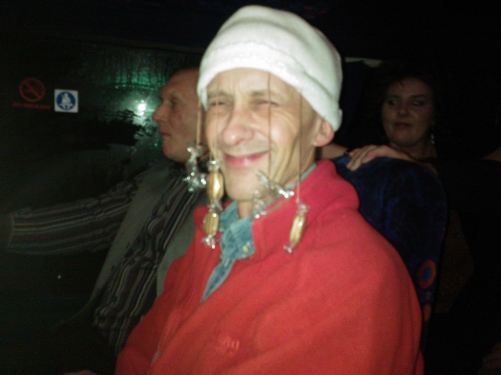
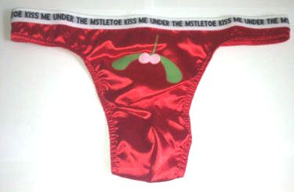

Mystery 2013
Up for it were:
Yupmeister, Anytime Tone, Pedro, Granpop Bill, Keithee's up for it, Craigee, Stubbee, Stew Art, JayCee, Dasher, Debri, Malc Jay, Dave Dixon, Spikelett, Mr Tahoohigh, Col, Heavy Steve Machine, Brockee, Ali Gee, Jacko, 2 Pie Hard Dave Semi-Colon and Tim Mothy. Plus Rocky, the driver.
A pick up was arranged for 3.45pm from The Glebe and a subsequent pick up from the Westbury Tavern. A new driver had been allocated to us, Rocky, a true gentleman who fitted in very well with us hoodlums right from the off.


Our first port of call was The Red Lion in Wistanswick, near Tern Hill. 2 beers were on offer from the local Rowton Brewery. http://www.perfectpint.co.uk/real-beer-breweries/791/Rowton-Brewery namely, Total Eclipse, a golden ale at 3.8% and Moonstruck Mild at 3.3%. Bombardier was also available. There was one order containing a dash and someone ordered lager !!
Pies, sausage rolls and butties were also provided although they were all but gone by the time Yup managed to get through to the dining room. Many thanks to June and Malcolm, the owners, for looking after us during our short visit, and good luck for the future.

We left around 5.45pm and headed south to Oakengates near Telford. The Old Fighting Cocks pub http://www.ironbridgebrewery.co.uk/blog/ofc had an upstairs cinema room so arrangements had been made to watch the premier showing of Mo’s leaving do, taken some 15 years ago.
Of course the main reason for showing this remarkable film was to show how folk had aged in just 15 years, and for no other reason whatsoever.
We bought drinks from the extensive selection of ales on tap and moved upstairs to take a seat for the 20 minute viewing.
It wasn’t quite 3D, as one of the clues loosely intimated, but it did have dolby surround which enhanced the atmosphere we vividly recalled from 1998 in Harry’s Bar.
There wasn’t enough time to move next door to sample the ales at the Station Inn, but there would be a further opportunity when we return on the Rail Ale trip planned for the summer of 2014.
Back on the bus, draws from the balti dish were made to determine the winner of this year’s King or Queen Humbug and the ‘guess the location’ award.
There were 3 humbugs this year who didn’t bother to send in a guess. To the relief of Debris and Mothy the disgraceful honour of King Humbug went to Stubby.

Both Pedro and Spike had guessed Telford as the final destination, and although it was incorrect, it was the nearest location to the Indian, The Lion at Water’s Upton. The prize money of £18 was split between them.
It was revealed that Shrewsbury would have been this year’s destination but it’d been dropped just 2 months previous due to changes in the conditions and prices proposed by the restaurant.
The Lion was only 20 minutes away and after settling in and making a start on popodoms and meat platters the award ceremony began.
The shameful booby prize was first issued to Granpop Bill for being the last to pay as the sounds of disgust echoed around the room.
The awards began with a run through of this year’s sqwalks, starting with Anytime Tone’s Hanchuch Woods Xmas sqwalk including the best ever breakfast stop (arranged by Yuppers), the Weaver Hills sqwalk, the Blythe Bridge sqwalk by Knotty, and the main summer brewery sqwalk by Joseph.
The summer walk was mainly remembered by Joe supporting Granpop Bill after the brewery visit as they wobbled back to town.


One of the most notable memories from Munich was of course that of Keithee over exerting himself on the first night and losing his glasses. Allegedly, these had been found and returned to Yuppers and were handed back to Keithee.
A run down of the Squarry doos was next on the agenda:
January should have began with The Keele observatory but was postponed due to bad weather.


The Liverpool Beer Festival followed with the Gee Spot award being given to Ali G for selecting the pubs which followed.
It was of course also a most memorable trip for AnytimeTone who was presented with the ‘Butt Head of the year’ award for making a superb pavement impression.


The briefest award of the year went to Keithee for his Sandbach trip in March and the briefest of notes. Anyone spot the spelling mistake ???
March saw out the worst ever unofficial annual trip to Pedro’s Newcastle Rugby Club and The Rose of Kashmir, and in April we went to Nottingham with Anytime Tone who was given a ‘skull splitter’ for his ‘Nott an Award’ Award.
A Cockerhoop award went to Craigee for taking his partners to the Barn at Woore in May and the annual Uttoxeter race meeting.
A proper job award would have been given to Jaycee for his efforts in organising a Jimmy Spicers day in Brum in June, but he was otherwise occupied in his role as a Happy County Wounty Woller. It was noted that it had been the quickest turn around of notes and a proper job had been made.
We revisited the Coopers Arms in Burton in July and the adjacent Apne Indian restaurant where we had ice creams for the first time ever. The Unofficial best ever annual squarry do with Tone at Stone followed in August and in October we returned to Stoke’s beer festival in conjunction with Pedro’s 60th celebrations. He was duly awarded a torch and bottle opener for losing his bottle in the hope that he’d find it someday.
The Alternative Squarry award went to the 2 reckless Desperados, Keithee and Bolt, for organising a Cuban / South American themed meal at the Rendezvous in Macclesfield preceded by 3 really good pubs. Keithee and Bolt have still got to choose the 2014 Alternative Mystery organisers unless anyone volunteers in the meantime, so don’t delay.
The Sqwoscar award was again put on hold and was replaced this year by the Confession Award. Yup admitted that the lads hadn’t been to Munich this year but had in fact been to sunny Benidorm. A shirt, with ‘I love Benidorm’, was consequently handed over to Dasher who had been unable to go.


Future sqwalks and doos were mentioned and the ceremony ended with a toast to the Squarry Club. Happy revealed himself to be Jaycee to huge applause and finally Anytime Tone awarded Yuppy with a token of everyone’s appreciation in the form of a bottle of Irish Whisky. Many thanks to everyone.

The meal continued and we left around 11ish after Yup had settled the bill. Many thanks must go to Raj and everyone else at the Red Lion who made it a truly excellent experience and hopefully many of us will return in the not too distant future. http://www.thelion-watersupton.co.uk/
The bus bounced back to the Potteries to the familiar sounds of Vera Lyn and George Formby and a further rendition of ‘Hi Ho, Hi Ho it’s off to work we go’.
Probably ‘the best ever’ seemed to be the legacy of this year’s mystery. Who knows?
All the best
Yuppers